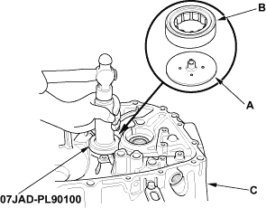
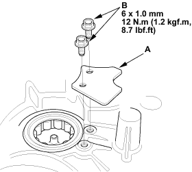
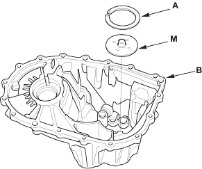
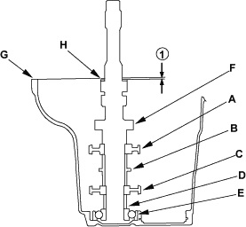

- Position the oil guide plate C (A) and new needle bearing (B) in the bore of the clutch housing (C).

- Install the needle bearing using the special tools.
- Install the bearing set plate (A) with bolts (B).


Special Tools Required
- Mainshaft holder, 07GAJ-PG20110
- Mainshaft base, 07GAJ-PG20130
- Remove the 72 mm shim (A) and oil guide plate (M) from the transmission housing (B).

- Install the 3rd/4th synchro hub (A), the distance collar (B), the 5th/6th synchro hub (C), distance collar (D), and ball bearing (E) on the mainshaft (F), then install the assembled mainshaft in the transmission housing (G).

- Install the washer (H) on the mainshaft.
- Measure distance (1) between the end of the transmission housing and washer with a straight edge and vernier caliper. Measure at three locations and average the reading.